실리콘밸리에서 일하는 개발자가 Meta에서 배운 실전 테크닉을 정리한 강의 영상이다. 주제는 두 가지 — AI가 길을 잃지 않는 코드베이스를 어떻게 설계하고, 에이전트를 팀 단위로 굴릴 때 토큰 비용을 어떻게 측정·통제하느냐다. AI 코딩을 "잘 시키는 법"을 넘어, 지속 가능하게 굴리는 운영의 관점을 다룬다.
강의의 출발점은 하나의 비유다. 에이전트에게 주는 것은 지침(Guidance)과 지형(Terrain) 두 가지인데, CLAUDE.md 같은 지침이 아무리 훌륭해도 코드베이스라는 지형이 중복 함수와 숨은 유틸리티로 가득한 미로라면 에이전트는 결국 실패한다는 것이다. 그래서 강의는 "지형을 어떻게 다듬을 것인가"에서 시작한다.
강의는 도발적인 문장으로 문을 연다. 에이전트가 실패하는 대부분의 이유는 코드를 잘못 짜서가 아니라 탐색·이해 비용 때문이라는 것이다. 모델이 똑똑해진다고 저절로 풀리는 문제가 아니다.
"실패의 원인은 코드 품질이 아니다 — Agent 실패의 대부분은 탐색·이해 비용 문제다."
슬라이드는 AI-ready가 안 된 저장소에서 "결제 로직 수정" 하나를 시키면 벌어지는 일을 보여준다. grep "payment" 하면 47개 파일이 매칭되고, 진짜 진입점을 몰라 5개 파일을 읽고, deprecated 코드를 진짜인 줄 알고 고치고, 테스트를 돌리면 엉뚱한 곳이 깨지고, 다시 탐색으로 돌아간다. 이 패턴 때문에 최적화되지 않은 저장소에서는 토큰의 80%가 탐색에 소모되고, 실제 코드 수정에 쓰이는 건 20%에 불과하다. AI-ready 코드베이스의 목표는 이 비율을 뒤집는 것이다.
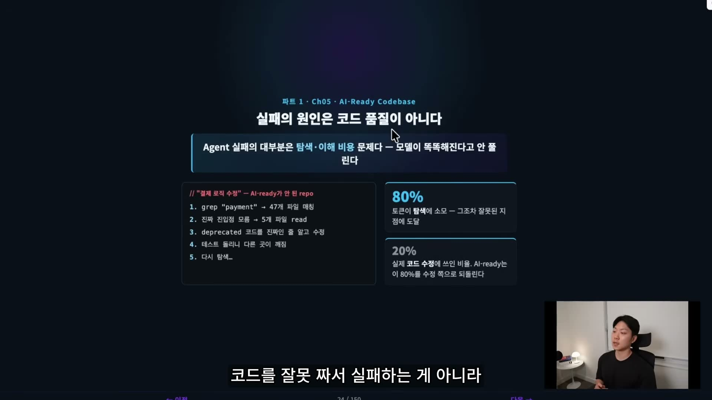
AI-ready 코드베이스란 에이전트가 길을 잃지 않고 명확하게 탐색·작업할 수 있는 코드베이스다. 사람은 몇 주에 걸쳐 멘탈 맵을 쌓지만 에이전트는 매 세션 처음부터 시작하므로, 세션 시작 첫 1분 안에 구조가 파악돼야 한다.
강의는 이를 위한 순차적 2단계 모델을 제시한다. 1단계 Codebase Sanity(코드가 건강한가)는 선결 조건이고, 2단계 Cartography(지도가 있는가)는 가속 장치다. 순서가 중요한데, Sanity 없이 Cartography만 그리면 "거짓말하는 지도"가 되기 때문에 둘 다 필요하다.
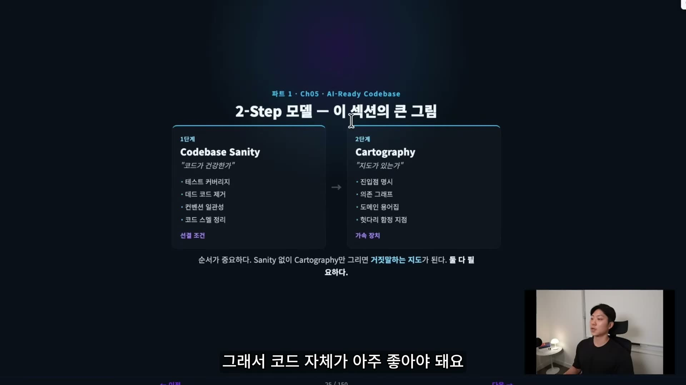
새로운 얘기는 아니다. 다만 에이전트 시대에 왜 더 중요해지는지가 핵심이다. 같은 코드 위생 항목이 사람 기준과 에이전트 기준에서 다른 의미를 갖는다.
강의는 이 중에서도 데드 코드의 비용이 가장 컸다고 강조한다. 사람은 직관적으로 죽은 코드를 거르지만, 에이전트는 죽은 코드를 진짜 진입점으로 착각해 한 세션을 통째로 날린다. 그래서 린터·테스트·커버리지가 자기 저장소에 깔려 있는지부터 점검하는 게 첫 단계다.
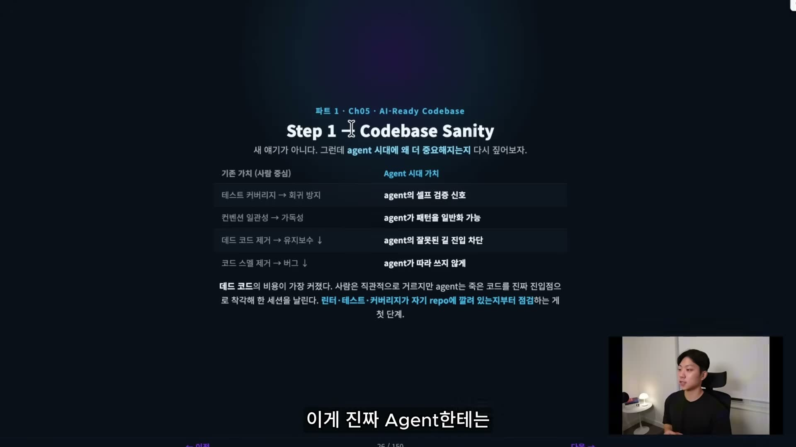
README가 사람을 위한 문서라면, Cartography는 에이전트에게 정확한 좌표를 주는 지도다. 진입점, 의존 그래프, 도메인 용어집, 헛다리 함정 지점 같은 것을 명시한다. 강의는 여기서 한 걸음 더 나아가 "측정 가능하게" 만든다. ai-readiness-cartography라는 커스텀 스킬이 저장소를 7개 카테고리·100점 만점으로 채점한다.
CLAUDE.md·가이드 문서의 정보 밀도·정확도앞 6개가 입력 측 점검이고 7번이 결과 측 점검이다. 발표자는 이 루브릭이 "절대적인 정답"은 아니며 프로젝트에 맞게 조정할 출발점이라고 짚는다.
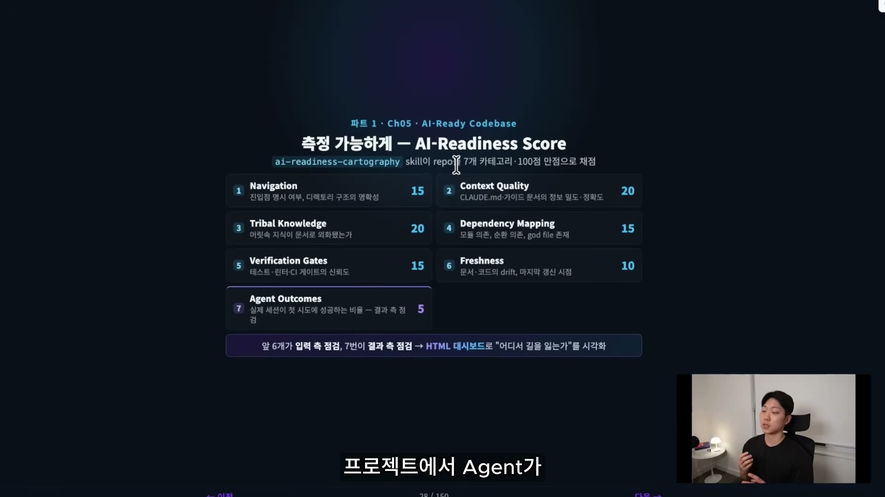
발표자는 VS Code 터미널에서 이 감사 스킬을 실제로 돌린다. score.py는 순수 표준 라이브러리(stdlib)만 쓰는 Python 3.10+ 자동 채점기로, --json 옵션에 구조화된 점수표(카테고리, 근거, 하위 점수, ROI 액션, 큰 파일 목록)를 뱉고 stdout에는 사람이 읽기 좋은 마크다운 요약을 낸다.
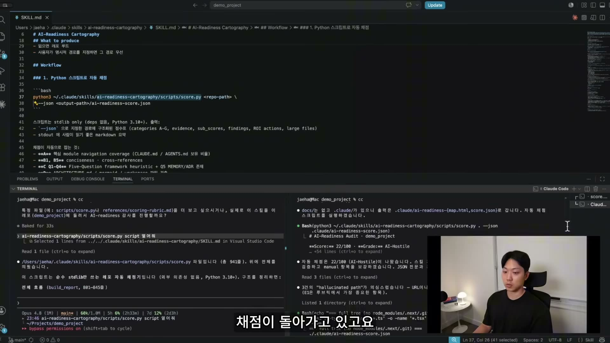
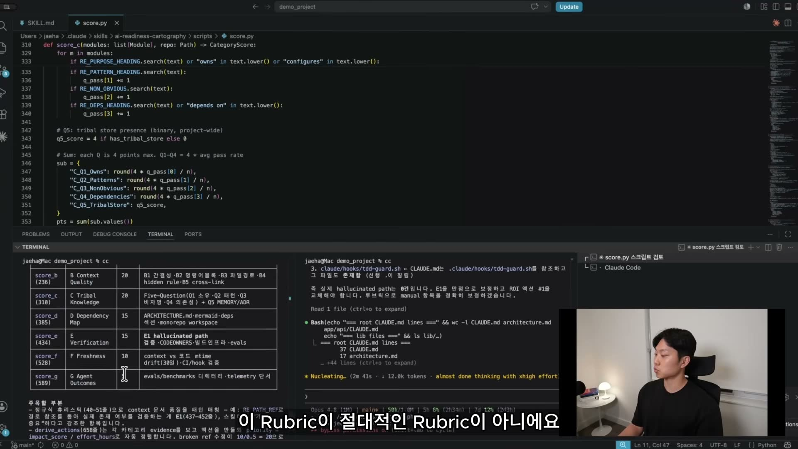
결과는 사람이 읽기 좋은 HTML 대시보드로도 나온다. AI 준비도 지수를 게이지로 보여주고(예: 54/100 · AI-Fragile), 7개 카테고리별 점수를 막대로, 프로젝트 구조를 노드 그래프로 시각화한다. 자동 스크립트가 22점으로 채점했더라도 hallucinated path 3건이 실은 false positive였음을 검증해 54점으로 보정하는 식으로, 자동 점수와 수동 검증을 함께 쓴다.
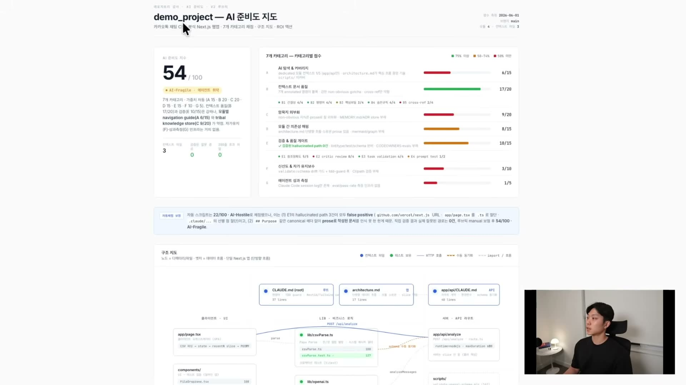
지침·문서·"세컨드 브레인" 같은 자산을 늘려 에이전트를 똑똑하게 만들수록 컨텍스트가 무거워지고 토큰 사용량이 늘어난다. 강의는 이 인과를 자산↑ → 컨텍스트↑ → 토큰↑ → 청구서↑로 정리한다. 그래서 두 번째 파트의 목표는 이 비용을 측정(대시보드)하고 통제(Cost Gate)하는 것이다.
먼저 토큰이 무엇인지부터 짚는다. 모델은 단어가 아니라 BPE(Byte Pair Encoding) 사전에 맞춰 자주 쓰는 부분 문자열을 한 덩어리로 묶어 읽는다. 예컨대 "Tokenizer splits subwords"는 Token / izer / splits / sub / word / s처럼 쪼개진다. 언어별 효율 차이가 실무에서 중요하다.
즉 한국어로 쓴 1,000줄짜리 CLAUDE.md는 같은 내용의 영어보다 두 배 가까이 토큰을 먹는다. 글로벌 팀이라면 내부 가이드를 영어로 쓰는 선택도 비용 차원에서 검토할 가치가 있다는 것이다.
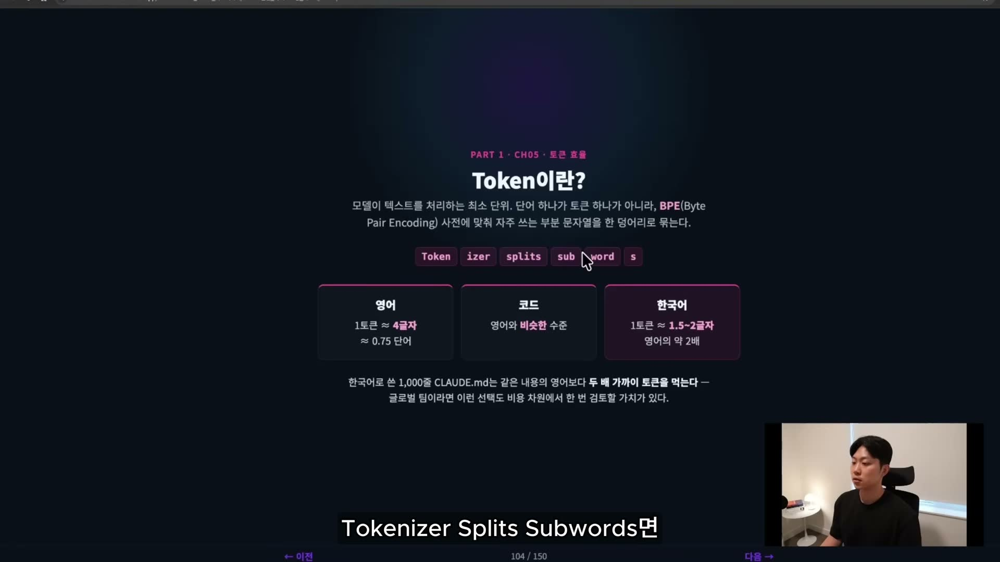
추상적인 "토큰 사용량"은 곧 실제 돈이다. 100만 토큰당 단가는 대략 입력 $5, 출력 $25, 캐시 쓰기 $6.25(입력의 1.25배), 캐시 읽기 $0.50(입력의 0.1배) 수준이다. 개인 한 명은 월 $100 정도로 조심스럽게 쓸 수 있지만, 10명 팀은 월 $1,000, 연 $12,000로 스케일한다. 게다가 회사 계정을 쓰는 팀원은 가시성 없이 비용을 쉽게 불릴 수 있다. 사용량이 커질수록 프롬프트 캐싱(Prompt Caching)이 비용 절감의 가장 중요한 도구가 된다.
캐싱의 원리는 단순하다. 같은 prefix를 반복해서 보내면 Anthropic 서버가 그 prefix의 계산 결과를 캐시해두고 다음 호출에서 재사용한다. 캐시 없이 매 turn 풀 가격으로 다시 계산하면 비용은 ×1.0이지만, 캐시를 쓰면 이후로는 읽기 가격 ×0.1로 떨어진다. CLAUDE.md·시스템 프롬프트·자주 읽는 큰 파일처럼 매 turn 거의 똑같이 들어가는 것들을 다시 계산하지 않는 게 핵심이다.
"Caching — 비용을 깎는 단일 최대 도구."
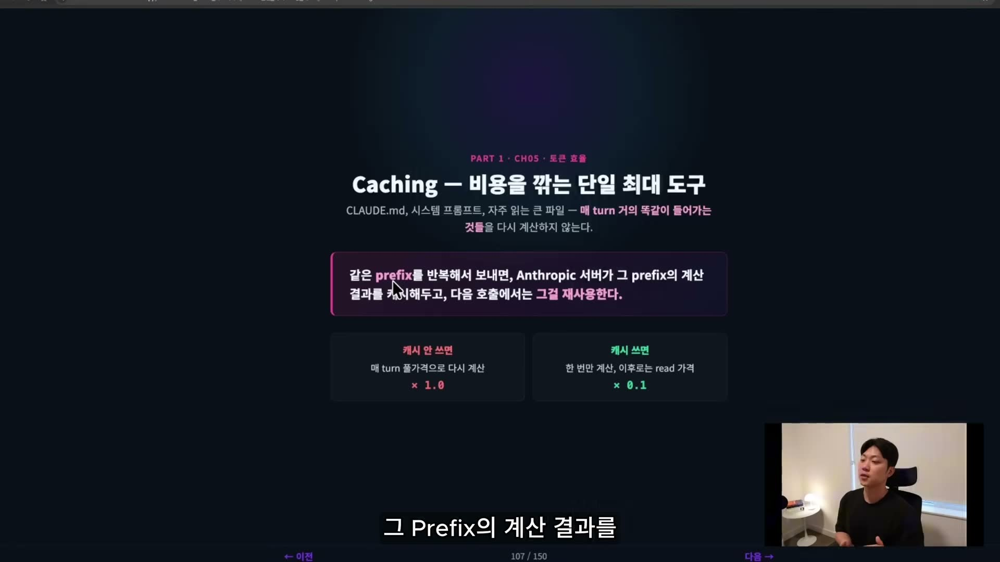
캐싱에는 반드시 알아야 할 세 가지 함의가 있고, 셋 다 워크플로우에 직접 영향을 준다.
CLAUDE.md, 큰 파일)은 위에, 매번 변하는 user 메시지는 아래에 둬야 한다.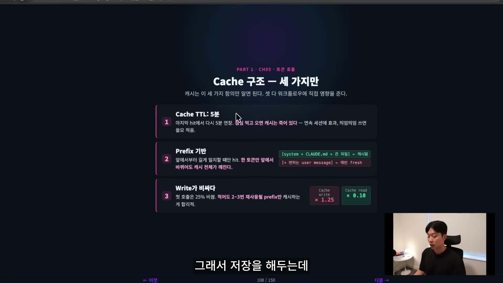
발표자가 실제로 쓰는 최적화 6가지는 그대로 팀 위키에 박아 둘 만한 공유 자산이다.
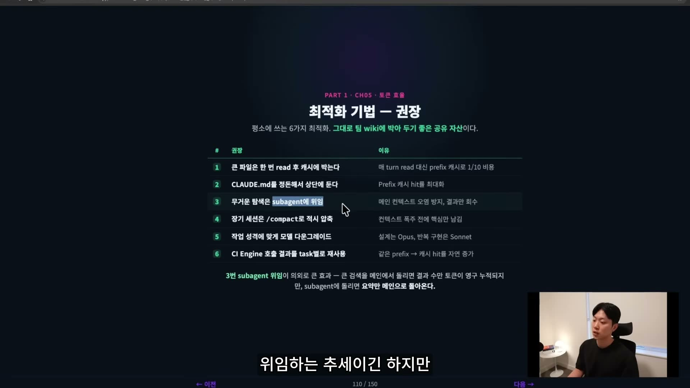
특히 3번 서브에이전트(sub-agent) 위임이 의외로 효과가 크다. 큰 검색을 메인 세션에서 돌리면 결과 수만 토큰이 컨텍스트에 영구 누적되지만, 서브에이전트에 돌리면 요약만 메인으로 돌아온다. 설계처럼 어려운 작업엔 Opus를, 단순 반복 구현엔 Sonnet·Haiku를 쓰는 모델 다운그레이드도 실질적인 비용 레버다.
측정을 위해 발표자는 세션 로그(JSONL)를 파싱해 효율 리포트를 만드는 Python 스킬(analyze_sessions.py)을 보여준다. 채점 루브릭은 캐시 활용도 40%(cache_read ÷ 총 입력, 0.85 이상이면 만점), 산출 밀도 20%(출력÷입력, ~2%가 적정), 중복 Read 비율 20%, 도구 사용 효율 20%로 구성된다. HTML 대시보드는 누적 비용, 캐시 히트율(목표 85% 이상), 등급 히스토그램, 비용 대비 점수 버블 차트, 가장 비싼 세션(hotspot)을 한 화면에 모은다.
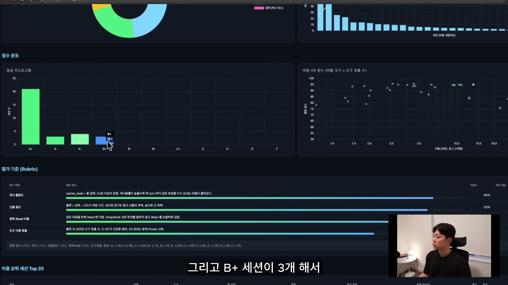
대시보드가 사후 점검이라면, Cost Gate는 사전·실시간 예방이다. 세션 단위 게이트는 한 세션이 임계치(예: 300K 토큰)를 넘으면 "이번 세션 비용 $X, 계속 진행하시겠습니까?"라고 경고하고, PR 단위 게이트는 한 PR을 만드는 누적 비용이 임계치(예: $20)를 넘으면 cost-flag 라벨을 붙여 별도 리뷰를 유도한다. 발표자는 지금 단계의 게이트는 "경고와 가시화"까지이고, 강제 정지 권한(세션을 죽이는 것)은 자율성을 죽이는 결정이라 다음 단계(가드레일)에서 다룬다고 구분한다.
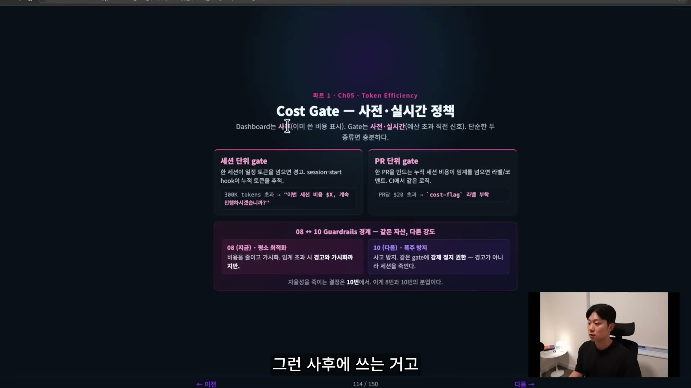
발표자는 토큰 효율이 단지 돈을 아끼는 문제가 아니라, 팀 안에서 AI 에이전트를 지속 가능하고 확장 가능하게 만드는 문제라고 정리한다. 모두가 같은 정의로 같은 숫자를 보고 같은 표를 참조하면, "절약하자"는 구호 없이도 비용은 알아서 내려온다는 것이다. 오늘 만든 토큰 대시보드와 Cost Gate 정책은 플러그인·팀 위키에 박아 두는 공유 자산이 된다.
"요약 — 비용을 깎는 건 다짐이 아니라 자산."
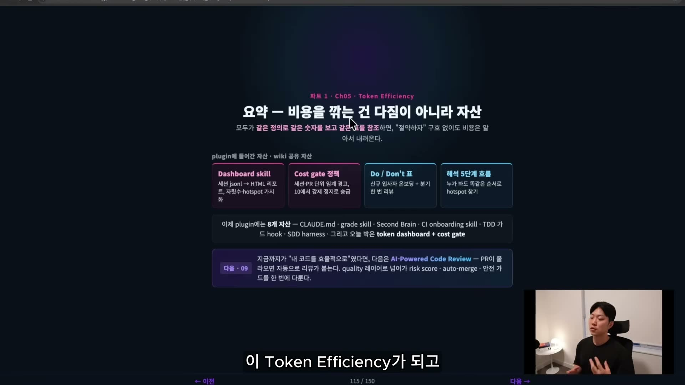
CLAUDE.md가 아무리 좋아도 코드베이스가 미로면 에이전트는 실패한다. AI-ready 코드베이스에서는 낭비되던 탐색 토큰 80%를 실제 수정 쪽으로 되돌린다.